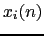
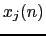
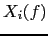
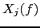
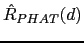

Next: TDOA Values Selection Up: Meeting Information Extraction Previous: ICSI Meetings Skew Estimation Contents
The computation of the time delay of arrival (TDOA) between each of the considered channels and the reference channel is repeated along the recording in order for the beamforming to respond to changes in the speaker. In this implementation it is computed every 250ms (called segment size or analysis scroll) over a window of 500ms (called the analysis window) which covers the current analysis segment and the next. The size of the analysis window and of the segment size constitute a tradeoff. A big analysis window or segment window lead to a reduction in the resolution of changes in the TDOA. On the other hand, using a very small analysis window reduces the robustness of the cross-correlation estimation, as less acoustic frames are used to compute it. The reduction of the segment size also increases the computational cost of the system, while not increasing the quality of the output signal.
In order to compute the TDOA between the reference channel and any other channel for any given segment it is usual to estimate it as the delay that causes the cross-correlation between the two signals segments to be maximum. In order to improve robustness against reverberation it is normal practice to use the Generalized Cross Correlation with Phase Transform (GCC-PHAT) as presented by Knapp and Carter (1976) and Brandstein and Silverman (1997).
Given two signals  and  the GCC-PHAT is defined as:
Where  and  are the Fourier transforms of the two signals and denotes the complex conjugate. The TDOA for these two microphones is estimated as:
Where  is the inverse Fourier transform of Eq. 5.10.
Although the maximum value of corresponds to the estimated TDOA for that particular segment, there are three particular cases for which it was considered not appropriate to use the absolute maximum from the cross-correlation function. On one hand, the maximum can be due to a spurious noise or event not related to the speaker active at that time in the surrounding acoustic region, being the speaker of interest represented by another local maximum of the cross-correlation.
On the other hand, when two or more speakers are overlapping each other, each speaker will be represented by a maximum of the cross-correlation function, but the absolute maximum might not be constantly assigned to the same speaker, resulting on artificial speaker switching. In order to effectively enhance the signal it would be optimum to first detect when more than one speaker is speaking at the same time and then obtain a filter-and-sum signal for each one, stabilizing the selected delays and avoiding them from constant speaker switching. Due to a lack of an efficient overlap detector, this was not implemented in this thesis and remains as future work.
Also, when the segment that has been processed is entirely filled with non-speech acoustic data (either noise or random acoustic events) the GCC-PHAT function obtained will not be at all informative. In such case no source delay information can be extracted from the signal and the delays ought to be discarded and substituted by something more informative.
In the system implementation, to deal with such issues, the top M relative maximums in eq. 5.11 are computed and several delay post-processing techniques are implemented to stabilize and choose the appropriate delay before aligning the signals for the sum. These are described below: